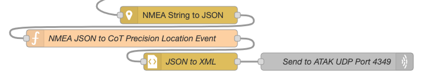

Adding a Network GPS to WinTAK & ATAK for GPS Denied Environments
This article describes a method for integrating an External / Network GPS into ATAK and WinTAK using a Raspberry Pi running Node-RED & GPSD, with an outboard GPS antenna and sufficient GPS satellite coverage. This integration provides GPS location information GPS Denied environments such as in-building, on-the-move, or underground / subterranean.
Background
ATAK & WinTAK End User Devices (EUDs) can use on-board GPS capabilities of most smartphone and PCs. In GPS-denied environments this capability can be replaced by a network-capable GPS to provide ongoing location awareness. The integration described in this article uses Node-RED to convert NMEA output from GPSD to a Cursor-on-Target (CoT) Events compatible with ATAK & WinTAK. (Of note: As of writing (Apr-27-2021), WinTAK supports raw NMEA input over network, while ATAK does not).
Requirements
While this integration method can be run on any host system, this article describes using a Raspberry Pi running Raspbian OS, with an attached USB GPS and outdoor antenna.
While GPSD is used on the Raspberry Pi to connect to the USB GPSD, it's also possible to connect to the USB GPS device directly from Node-RED, but that is outside the scope of this article.
- Raspberry Pi running Raspberry Pi OS
- USB GPS
- GPSD
- Node-RED
- node-red-contrib-nmea: A Node-RED node to decode NMEA format messages.
- WinTAK or ATAK
Node-RED Steps
Below are a directly downloadable version of this integration, as well as a walk-through of the Node-RED Flow itself.
Node-RED Flow Download
You can download an example of this integration at: https://gist.github.com/ampledata/a44a4d0279489f15b6fb5a3c0afb25c9
Node-RED Flow Walk-through
The Node-Red Flow for this integration can be described as 4 total steps.
Step 1 - Connect-to & Configure GPSD
This step connects to the GPSD Network port 2947 on localhost (127.0.0.1), and configures the port to send NMEA:
?WATCH={"enable":true,"json":true,"nmea":true,"raw":0,"scaled":false,"timing":false,"split24":false,"pps":false}
Step 2 - Parse output from GPSD
We'll need to convert the Javascript Buffer to a Javascript String, and we'll also split the network payload by newline into individual messages. This allow us to filter NMEA sentence type later.
Buffer.toString() Function Node code content:
let oldPayload = msg.payload;
msg.payload = oldPayload.toString();
return msg;
Step 3 - Filter NMEA Sentence type, send NMEA directly to WinTAK

We're only interested in NMEA GPGGA Sentences, and WinTAK can read those over the network on port 4349.
If you're only using WinTAK, you're done! Otherwise, move to the next step.
Step 4 - Extract NMEA, Serialize as CoT

Using the NMEA Parsing Node we'll serialize the NMEA as JSON. Then we'll create a new CoT Precision Location Event in JSON, and covert it to XML. Finally, we'll send it over the network to ATAK on port 4349.
CoT Precision Location Serialization Javascript code follows:
/*
Create a CoT XML serializable JSON payload from NMEA JSON input.
Author:: Greg Albrecht W2GMD <oss@undef.net>
Source:: https://ampledata.org/atak_external_gps.html
*/
// Geenrate a timestamp for the CoT Event
const dt = Date.now();
const dtD = new Date(dt).toISOString();
// "stale" Period (mostly ignored for this type of Event)
const dtD5 = new Date(dt + 250000).toISOString();
// Copy old event for reference
let oldPayload = msg.payload;
msg.payload = {
event: {
$: {
version: "2.0",
uid: "External-GPS",
type: "a-f-G-E-S",
time: dtD,
start: dtD,
stale: dtD5,
how: "m-g"
},
point: [ {
$: {
lat: oldPayload.lat,
lon: oldPayload.lon,
hae: parseFloat(oldPayload.alt) + parseFloat(oldPayload.geoidalSep),
ce: oldPayload.horDilution,
le: 0
}
} ],
detail: [ {
precisionlocation: [ {
$: {
geopointsrc: "GPS",
altitudesrc: "GPS"
}
} ],
remarks: ["External GPS"],
extendedGpsDetails: [ {
$: {
fixQuality: 1,
numSatellites: oldPayload.numSat,
time: oldPayload.timestamp
}
} ]
} ]
}
}
return msg;
ATAK Steps
- From ATAK, select Settings:
- Select Show All Preferences:
- Select Device Preferences:
- Select GPS Preferences:
- Select GPS Option:
- For GPS Option, select External or Network GPS / Fallback Internal GPS:
- Exit Settings (possibly restart ATAK).
WinTAK Steps
WinTAK steps and menu are identical to ATAK Steps.